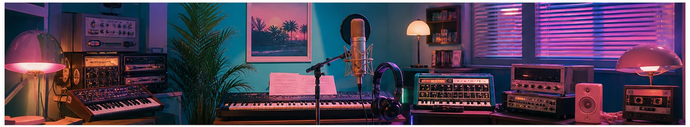

무대 밖 부캐가 무대로, 디노 ‘피철인’이 보여준 여름 감각
세븐틴 디노의 부캐 ‘피철인’이 현장 직캠과 신곡 소식으로 네이버 연예 검색에서 눈길을 끌었다. 진지한 퍼포먼스 실력으로 알려진 아티스트가 과감한 스타일과 유쾌한 설정을 입자, 팬들은 익숙한 인물 안에서 전혀 다른 캐릭터를 발견했다. 부캐는 단순한 분장보다 음악과 말투, 무대 태도까지 하나의 세계관으로 연결될 때 힘을 얻는다.
피철인의 매력은 복고를 그대로 재현하지 않는 데 있다. 시티팝의 부드러운 리듬, 여름밤을 떠올리게 하는 색감, 약간은 능청스러운 제스처를 오늘의 감각으로 다시 조립한다. 익숙한 요소가 팬에게는 편안함을 주고, 예상 밖의 조합은 짧은 영상에서도 즉시 알아볼 수 있는 개성을 만든다.

최근 음악 홍보에서 직캠은 공식 무대만큼 중요한 출발점이 된다. 관객의 반응과 현장의 공기가 담긴 영상은 완벽하게 편집된 콘텐츠와 다른 생동감을 준다. 특정 표정이나 동작이 반복 재생되고 짧은 밈으로 확산되면, 아직 노래를 듣지 않은 사람도 캐릭터에 먼저 관심을 갖게 된다.
다만 부캐가 오래 사랑받으려면 웃음만으로는 부족하다. 본체의 실력과 연결되는 노래, 무대 완성도, 다음 이야기를 기다리게 하는 일관성이 필요하다. 팬이 캐릭터를 놀리면서도 존중할 수 있는 이유는 결국 음악적 기반이 단단하기 때문이다. 설정은 입구가 되고, 좋은 곡과 퍼포먼스가 머무를 이유가 된다.
이번 흐름은 아이돌 개인 활동의 방식이 넓어졌다는 신호이기도 하다. 정형화된 솔로 데뷔 대신 캐릭터 프로젝트로 취향을 시험하고, 팬과 함께 설정을 발전시키며 부담을 낮출 수 있다. 그룹 활동에서 보여주기 어려웠던 음색과 유머를 꺼내는 안전한 실험실이 되는 셈이다.
부캐 프로젝트를 즐길 때 팬들이 살펴볼 지점도 많다. 의상과 말투에 숨은 과거 음악의 인용, 본체 활동에서 이어지는 안무 습관, 라이브 편곡의 변화는 짧은 밈보다 오래 감상할 요소다. 제작진이 캐릭터의 유머를 밀어붙이면서도 특정 시대나 세대를 낡았다고 조롱하지 않는지도 중요하다. 복고는 과거를 소비하는 장치가 아니라 현재의 감각으로 대화하는 방식이기 때문이다. 음원만 들었을 때도 성립하는 곡인지, 영상과 함께 볼 때 새로운 층위가 생기는지도 비교해 볼 만하다. 캐릭터가 인기를 얻을수록 협업과 광고 제안이 늘겠지만 모든 확장이 세계관에 어울리는 것은 아니다. 선택과 집중을 통해 낯선 매력을 유지하는 것이 다음 단계의 과제다.
화제의 속도가 빠를수록 정보의 날짜와 출처를 확인하는 습관이 중요하다. 검색 결과의 제목만 보지 말고 공식 발표와 원문을 함께 살피며, 예고 단계의 내용과 확정된 사실을 구분해야 한다. 개인의 짧은 후기나 영상은 현장감을 주지만 전체 상황을 대표하지는 않는다. 서로 다른 관점을 비교하고 새 공지가 나오면 판단을 업데이트하자. 관심을 표현할 때도 당사자의 개인정보와 초상권, 아직 공개되지 않은 내용을 존중해야 한다. 빠르게 공유하는 것보다 정확하고 배려 있게 이해하는 태도가 결국 더 좋은 팬 문화와 공론장을 만든다.
한편 검색량이 높다는 사실이 곧 가치나 완성도를 뜻하는 것은 아니다. 화제가 시작된 배경과 사람들이 반응한 이유를 차분히 나누어 보면 유행을 더 입체적으로 읽을 수 있다. 서로 다른 취향과 경험을 존중하고, 확인되지 않은 내용을 단정하거나 과장된 표현으로 갈등을 키우지 않는 것도 중요하다. 오늘의 인기 키워드를 잠깐 소비하는 데서 그치지 않고 우리 생활과 문화에 어떤 변화를 남기는지 지켜볼 때 이야기는 더 풍성해진다.
여름 대중음악에는 계절을 즉시 환기하는 한 장면이 필요하다. 피철인이 보여준 선명한 색, 경쾌한 태도, 아련함이 섞인 사운드는 그 조건을 잘 활용한다. 화제성이 일회성 직캠을 넘어 하나의 음악 세계로 이어질지, 다음 무대에서 어떤 변주가 나올지가 관전 포인트다.